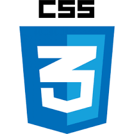

As tecnologias front-end
HTML

HTML (Linguagem de Marcação de HiperTexto) é o bloco de construção mais básico da web. Define o significado e a estrutura do conteúdo da web. Outras tecnologias além do HTML geralmente são usadas para descrever a aparência/apresentação (CSS) ou a funcionalidade/comportamento (JavaScript) de uma página da web. "Hipertexto" refere-se aos links que conectam páginas da Web entre si, seja dentro de um único site ou entre sites. Links são um aspecto fundamental da web. Ao carregar conteúdo na Internet e vinculá-lo a páginas criadas por outras pessoas, você se torna um participante ativo na world wide web.
Você pode encontrar mais informações sobre a HTMLMDN Web Docs - HTML
CSS
CSS (Cascading Style Sheets ou Folhas de Estilo em Cascata) é uma linguagem de estilo (en-US) usada para descrever a apresentação de um documento escrito em HTML ou em XML (incluindo várias linguagens em XML como SVG, MathML ou XHTML). O CSS descreve como elementos são mostrados na tela, no papel, na fala ou em outras mídias. CSS é uma das principais linguagens da open web e é padronizada em navagadores web de acordo com as especificação da W3C. Desenvolvido em níveis, o CSS1 está atualmente obsoleto, o CSS2.1 é uma recomendação e o CSS3, agora dividido em pequenos módulos, está progredindo para a sua padronização.
Você pode encontrar mais informações sobre a CSSMDN Web Docs - CSS
Javascript

JavaScript (às vezes abreviado para JS) é uma linguagem leve, interpretada e baseada em objetos com funções de primeira classe, mais conhecida como a linguagem de script para páginas Web, mas usada também em vários outros ambientes sem browser, tais como node.js, Apache CouchDB e Adobe Acrobat. O JavaScript é uma linguagem baseada em protótipos, multi-paradigma e dinâmica, suportando estilos de orientação a objetos, imperativos e declarativos (como por exemplo a programação funcional). Não se deve confundir o JavaScript com a linguagem de programação Java. Tanto Java quanto JavaScript são marcas registradas da Oracle nos Estados Unidos da América e em outros países. No entanto, as duas linguagens de programação possuem sintaxe, semânticas e usos muito diferentes.
Você pode encontrar mais informações sobre a JSMDN Web Docs - JS